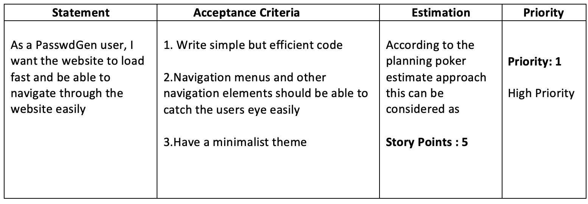

SIT120 – Assignment 1 – Project Proposal
Thiloka Withanage - 218454252
Summary
In this day and age, your personal data is stored everywhere online and it is important that the data you store is saved securely without any unauthorized access. One of the most common ways hackers break into data is by guessing passwords. Simple and commonly used passwords enable intruders to easily gain unauthorized access and potentially use your data maliciously. So, it is important that you have a strong password that cannot be guessed easily and is secure from potential attacks such as brute force or dictionary attacks.
PasswdGen is going to be a password generator that allows the user to choose certain criteria and generate a password according to that criteria.
PasswdGen will use different algorithms to ensure that the criteria of the users are met, and that it is reliable.
PasswdGen will also show if the generated password is weak or strong according to an algorithm. The user can also check a password that is not generated using
PasswdGen to determine if their password is secure or not. The user will be able to copy the generated password, or regenerate one if needed.
The focus of this web application is to be responsive across all devices and screen sizes (Mobiles, Laptops, Desktops and Tablets), be free, easy to use with amazing UX/UI design and be compatible with all web browsers. This web application will be built using HTML/CSS and JavaScript (Vue Js framework).
Asset List
Here are some of the assets that we will be using for this project
Menu Bar
This will be used to help users navigate through the web pages included in the website. This is one of the most common thing used in a website. The menu bar will include pages to – Home, Tips and Tricks, About Us and Contact Us.
Images and Animations
This will be used to enhance the design of the website, while making it attractive for the users. For example – A logo.
Sliders, Text Boxes and Buttons
These will be used in the application. Sliders will be used for the criteria input by the users, buttons will be used for users clicking the generate button or the submit button on the contact us page and text boxes will be used for output of the generated password and user input of the form on the contact us page.
Class and Style Bindings
Since the application uses sliders to get the criteria of the users, we can use style bindings to change between colors of the sliders when a slider is at a certain value. The application will also include a strength bar to show the strength of the password, so we can use class bindings to differentiate between the colors of the strength bar.
Conditional Rendering
Conditional rendering will be used in this project. Conditional rendering is basically if and else logic, so there are a lot of places we can use this responsively. For example – if a password isn’t generated by the user yet, the button can show “generate”, but after the user has generated a password the same button can show “regenerate”.
Computed Properties
Since our application will have a strength bar, we can use computed properties to create an algorithm to determine the strength of the password.
Dynamic Components, Props and Event Handling
These will be discussed in the
Complex Components section.
Project Purpose
The purpose of this project is to create a password generator that is reliable, fast, and easy to use across all devices. It will have a responsive design that will be easy to navigate from all devices and compatible with all major browsers. The UX/UI design of this web application is going to be simple yet elegant. The performance, reliability and security of the website will be a top priority and it will be made sure that these factors are up to the standards.
Overall the target audience for this web application would be people who are concerned about their security and passwords online. For example, The project will target people who want to generate a password according to a given criterion with ease on any device or for people who want to check their password and determine if it is secure or not. Another Example would be people who want to educate themselves on overall password security and how to avoid getting hacked.
Here are some ways to make the application appealing to the audience
Responsive Web Design
In today's world, it is important to have a responsive web design as different people use different devices. A single user may also use different devices. The web application will be compatible with all devices and browsers so that it will be easy and appealing for the users. For example - the web application will resize and respond according to different devices, browsers and screen sizes.
User Friendly Interface
It is important that the user is able to navigate through the website easily without any hassle, quickly getting to the point and important information without any distractions to the user. Even if it is the first time a user is visiting, the user should be able to navigate easily through the website without any problems. This web application will focus on delivering a simple yet straightforward and friendly user interface.
Webpage Speed
The speed of the webpage is a main factor that determines if the user will stay on the site or
leave. It is important that the web page will load fast and have no errors. PasswdGen will use
minimal but efficient code to ensure that the user will get the fastest experience when using the application.
UX/UI Design
As mentioned before, PasswdGen will try it’s best to satisfy users with its design, while keeping it simple. All the information delivered should be easy for the user’s eye without any distractions, but also make the user feel elegance in the design so he or she will return back to the website. For example - adding buttons or adding sliders for user’s criteria input. This will also include images and animations to make the website look more attractive.
Save user’s preference
Automatically save the user's preference (criteria) for the password generator, so when the user reloads the page or returns to the website, he or she will not need to input the criteria again.
A specific theme
PasswdGen will have a specific theme and a specific color pallet that will be eye catching and attractive for the users
Complex Components
Dynamic Components
Dynamic Components is a way of quickly switching between components and Vue has a simple way of doing this. In our application we established that we will let the user generate a completely new password or let them check a password that they already have to determine the strength of it. We can put these two functions into different components and use Dynamic Components to switch through them in a tabbed interface so that they can appear in the same page and same place
(Check UX/UI Design 1 for an idea). We can also use keep-alive to cache the user criteria on the generate component and cache the user’s password on the checking component so that the user would not need to input the criteria or type the password again and again when switching between the components which will be very convenient for the user.This could also be used in the entire menu bar where each page is a new component. You can check the
Proof of Concept for an idea about this.This could also be used in the entire menu bar where each page is a new component.
Props
Props are a way of passing data from a parent component to a child component. For example, if a web application has a root component and a header component as a child, it can use props to pass the header data from the root component. In our website, we will have a “Tips and Tricks” page that the user can visit to be educated about the overall security and how to stay safe online. We will be using props for this page as it will look like a blog. The style of the posts will be the same, but the actual data in the posts will be different. We don’t need to create different components for every post, but we can create one component and pass down the data required for each post through a root component using an array of strings. We can also use props for our dynamic components and will make our code much simple and as a result make our web perform better.
Event Handling
Event handling is a way of making the application more interactive by triggering the application to do something when the user clicks something. In our application, when the user clicks the generate or regenerate button, the program will have a v-on:click that triggers the users click and generates a new password according to the user criteria. This will also be used in the text field where the user can copy the password. This will also be used for social media icons, submit buttons on forms etc.
User Stories
Here are some of the User stories that were developed for this website
User Story 1
User Story 2
User Story 3

UX/UI Designs
Here are some of the UX/UI designs that was developed for this website
UX/UI Design 1 (Desktop View)
UX/UI Design 2 (Contact Us Page)
UX/UI Design 3 (Mobile View)
Summary of how the Web System will function
This web application is going to be created within a certain timeframe, and there will be various functions that will be used. As said before, this web application will use HTML, CSS and JavaScript (Vue JS framework) and will be a responsive website. The main function of PasswdGen would be to generate passwords for users according to the user’s criteria. Users will also be able to share the website through social media through the social media icons that are added into the website. The website will have maximum performance, reliability and security including a minimalist theme.
Home
This will be the homepage of the website, where the main component of the web application will be found – The password generator – where the user can go to input their criteria (for example – how many digits or symbols) and generate a password. After the password is generated, the user will be able to copy it or regenerate a new password using a button(Event Handling). The application will show if the generated password is secure or not according to an algorithm. We will use computed properties to determine the strength and develop an algorithm. The user can also input a password that is not generated by PasswdGen and check if their password is secure or not. This page will use dynamic components to differentiate between the generator and the checker. This page will contain images, animations and text which will be attractive and catch the user's eye.
Tips and Tricks
This page will be dedicated to information on how to ensure that you don’t get hacked using different methods and overall tips and tricks for better security. The user will be able to go to this page and read up on tips and tricks about password security. This page will have a root component which will use props to pass down data to the posts of the page.
About
This page will be dedicated to information about PasswdGen. For example- Who made it for what purpose, what version is it etc. The user can go to this page to get information about PasswdGen.
Contact Us
This page will have 2 functions. One will be a form to contact PasswdGen, and the other will be a form to request new features or recommendations to be added. The user will have to input an email address or phone number to contact PasswdGen, and write a short message regarding why they are trying to contact PasswdGen. PasswdGen will then get back to the user according to their email address/phone number and the reason why. This page will use a dynamic component to switch between the two functions.
Milestones - Feasibility Proof
Milestone 1: HTML page for the main site
Creating the web pages using HTML and CSS (foundation)
Estimation Man Hours : 20 HOURS
Milestone 2: Work on the JavaScript
Working on the JavaSript using Vue framework and getting all components together and coding them so that they function efficiently. (this will include HTML and CSS as well)
Estimation Man Hours : 30 HOURS
Milestone 3: User Interface Design
Making the interface so that it looks clean and is attractive for the user’s eyes.This will include adding CSS to enhance the appearance of the website. For example - Adding CSS to buttons, componenents etc.
Estimation Man Hours : 15-20 HOURS
Milestone 4: Responsive Design
Responsive Design so that it works well on all devices and browsers. (Using CSS)
Estimation Man Hours : 10 HOURS
Milestone 5: Testing and Implementation
Testing the entire web application to check for any errors and implement if there are no errors to be seen. If there are errors fix the errors and implement.
Estimation Man Hours : 10-15 HOURS